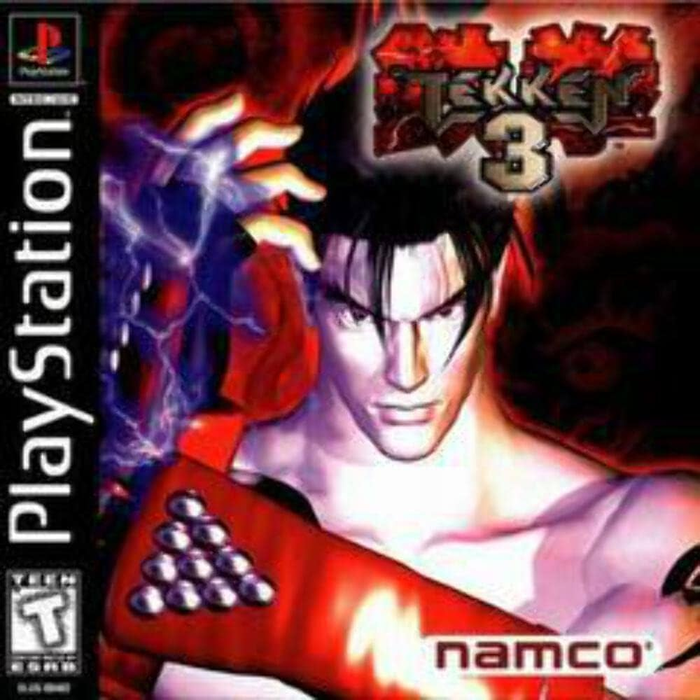

Sony is a Japanese multinational company known for its innovative electronics,
including retro devices that left a significant mark in tech history.
Iconic products like the Sony Walkman, released in 1979, revolutionized portable music,
allowing people to carry their favorite tunes on the go. The PlayStation, introduced in 1994, transformed the gaming industry, setting new standards for home entertainment.
Sony's retro devices are celebrated for their sleek design, durability, and cutting-edge technology for their time, making them nostalgic favorites for tech enthusiasts.company info
Click here for more Information
First Device
|
 |
||

Resident Evil 2 
Silent Hill

Tekken 3
Crash |
|||
Second Device
|

|
||
|
Fifa 14 
Final Fantsy X 
Resident Evil 4 
Bully |
|||
Third Device
|
 |
||

Need For Speed 
Mortal Combat 
assassin's creed 
resistance |
|||